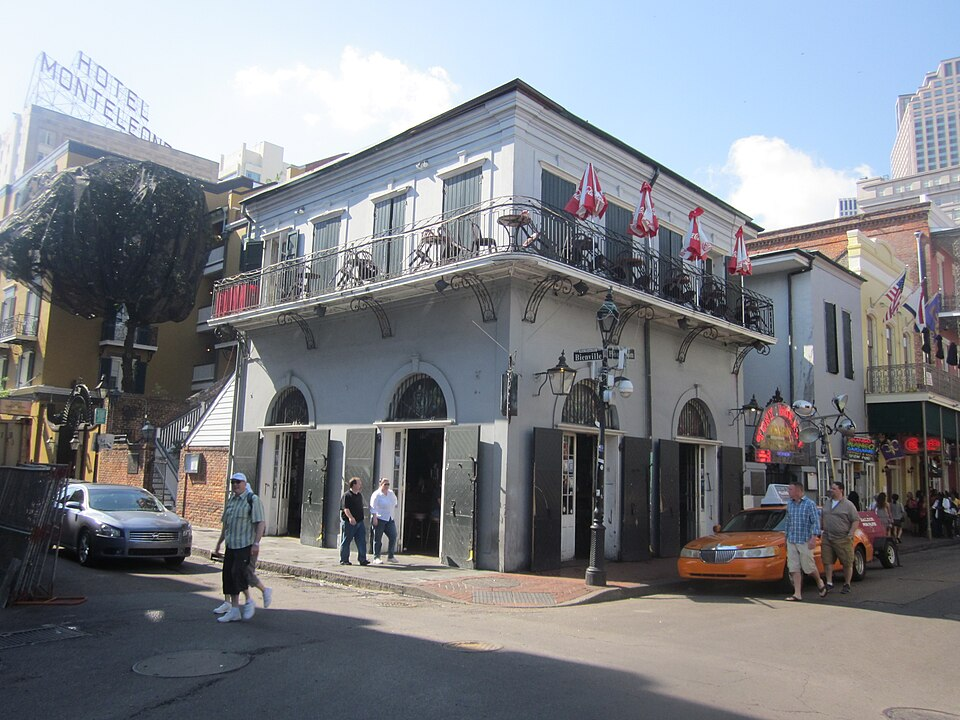

01 · Bourbon at Bienville
The Old Absinthe House
The Old Absinthe House stands at 240 Bourbon Street, at Bienville, in a building usually dated 1806 (some accounts say construction began in 1798). A liquor licence is documented around 1835–36, which is why many researchers treat it as the French Quarter’s best-supported “oldest bar,” ahead of more colorful legends nearby. It is a working Bourbon Street bar with a long absinthe-and-story reputation.
Tip: A two-minute walk from the Carousel Bar. Go earlier in the day if you want a quieter look at the room; Bourbon Street gets loud at night.
Directions: Google Maps · Apple Maps
Photo: Infrogmation of New Orleans, CC BY-SA 3.0, via Wikimedia Commons
Sources: Rue Bourbon: Old Absinthe House
See The Old Absinthe House on our Unique Pubs deck →
Find a stay near The Old Absinthe House →